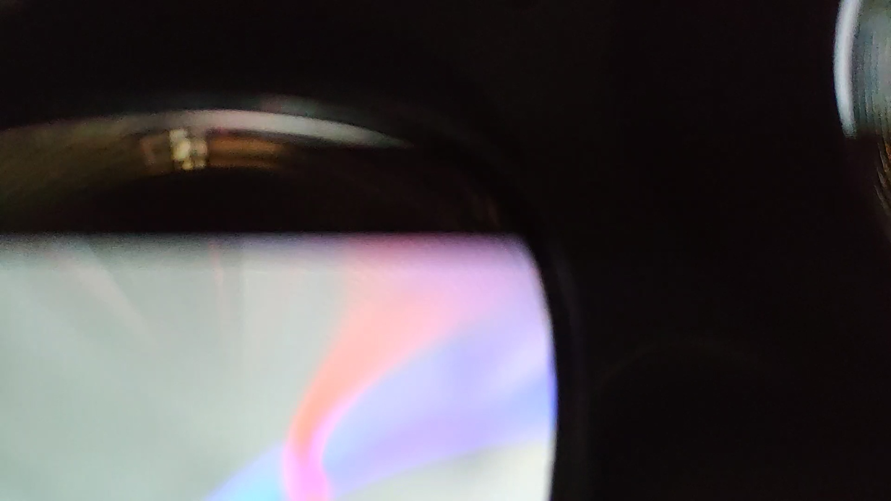
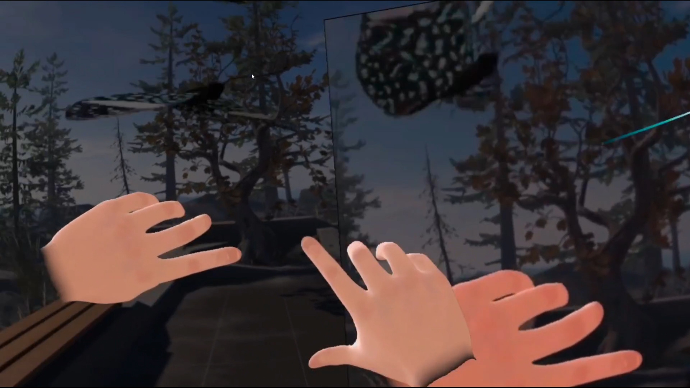
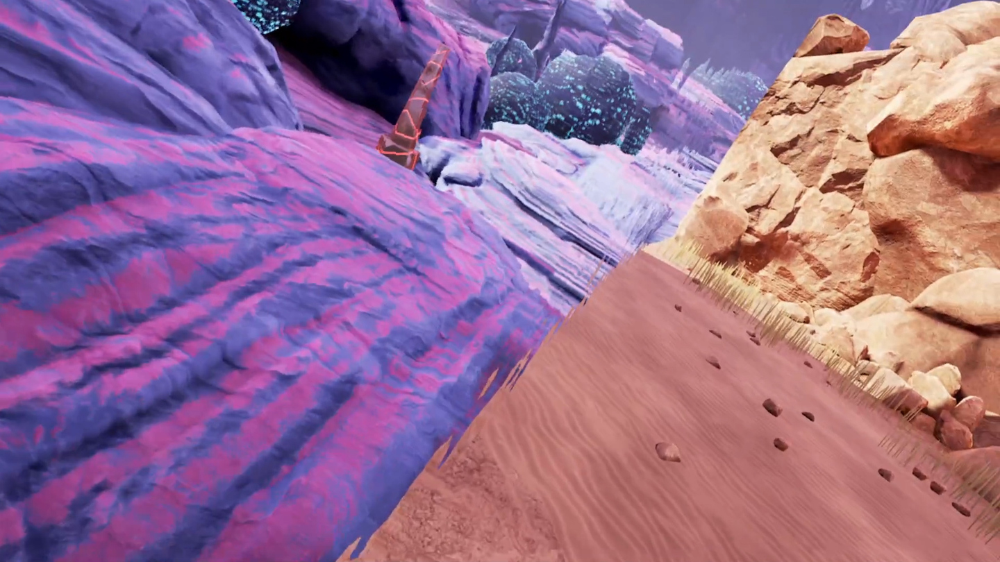

Delimitantes
Se ha creado un video ensayo experimental que trata de analizar esas curiosas imágenes que capta la visión de las gafas integradas de las Oculus Quest 2. Se ha llevado a cabo la edicion en Adobe Premiere Pro. El audio está recogido de la experiencia de realidad virtual de la BBC llamado "Home - A VR Spacewalk" Se ha grabado video de Minecraft VR, Steam VR y Obduction.
Ver el video



